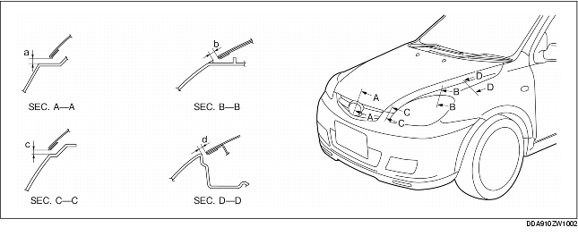

1. Verify that the gap between the bonnet and the body is within the specification.

Clearance
2. Remove the front fender panel.
3. Loosen the bonnet hinge installation bolts and reposition the bonnet hinges.
4. Tighten the bolts.
5. Install the front fender panel. (SeeFRONT FENDER PANEL REMOVAL/INSTALLATION.)
1. Turn the stop rubber to adjust the height of the bonnet.
2. Verify that the height difference between the bonnet and the body is within the specification.
Clearance